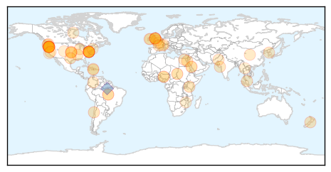

Ebola
30-Day Web Trend
4 alerts, 0 warnings

30-Day Twitter Trend
21 alerts, 0 warnings

Article Locations

Article Confidences

Top Articles:
- 1.000
- The Last Place on Earth With Ebola: Getting Guinea to Zero
- 0.999
- The end of Ebola in Sierra Leone
- 0.999
- US Ebola training focuses on astronaut-like gear
- 0.999
- The end of Ebola in Sierra Leone
- 0.999
- Sierra Leone hours from being declared free of Ebola
- 0.999
- Sierra Leone hours from being declared free of Ebola
- 0.999
- Sierra Leone: Reaching and staying a resilient zero - Sierra Leone
- 0.998
- Learning Ebola's Lessons -- The Hard Way
- 0.998
- Sierra Leone emerges from Ebola nightmare
- 0.998
- Britain hails end of Ebola outbreak in Sierra Leone
- 0.997
- Ebola scare travels from Texas to Ohio
- 0.996
- How technology can help reboot Ebola-free Sierra Leone
- 0.996
- Sierra Leone to be declared ebola-free but challenges remain - Sierra Leone
- 0.993
- Sierra Leone's freedom from ebola virus epidemic sparks street parties and sadness
- 0.991
- WHO Approves Untested Ebola Medication As Emergency Measure
- 0.990
- Sierra Leone emerges from Ebola nightmare
- 0.985
- Scottish university scientist behind successful rapid-detection Ebola test
- 0.984
- Ebola outbreak: WHO 'delayed Sierra Leone state of emergency'
- 0.982
- Anticipation Grows as Sierra Leone Readies to be Declared Ebola-free
- 0.980
- Sierra Leone's frontline aid workers count down to Ebola-free declaration
- 0.977
- The most from the coast
- 0.971
- FOIA docs: Press aide encouraged CDC boss Tom Frieden to appear on ‘The O’Reilly Factor’
- 0.964
- Tzu Chi Foundation USA Ships Needed Medical Support to Sierra Leone - Sierra Leone
- 0.962
- Ebola And Hospital Acquired Infections
- 0.962
- Scottish university scientist behind successful rapid-detection Ebola test
- 0.953
- Global Times Newspaper
- 0.935
- Scots scientists invents rapid Ebola test kit that fits in suitcase
- 0.912
- The Ebola mobile suitcase laboratory successfully tested in Guinea
- 0.899
- UNICEF Guinea Ebola Situation Report, 28 October 2015 - Guinea
- 0.897
- Anticipation Grows as Sierra Leone Readies to be Declared Ebola-free
- 0.888
- Anticipation Grows as Sierra Leone Readies to be Declared Ebola-free
- 0.883
- Biologists talk pathogens at Women in Science lecture
- 0.855
- Sierra Leone News: D-Day is here: Voices on the Street « Awoko Newspaper
- 0.838
- Counting down to an Ebola-free future in Sierra Leone
- 0.838
- Will climate change = more disease?
- 0.806
- US health experts tip Ugandan medics
- 0.801
- Amidst Ebola Crisis, Coordination and Long-Term Thinking Pay Off
- 0.769
- Sierra Leone girls forced into 'degrading' pregnancy tests after school ban
- 0.709
- ‘One of Liberia’s True Friends’
- 0.687
- Mabesseneh Hospital wants financial and non‐financial supports
- 0.627
- Sierra Leone News: Tomorrow is a great day for Sierra Leone-Amb. Zhao « Awoko Newspaper
- 0.603
- Will This Be Our Decade of Data Use?
- 0.559
- Sierra Leone: Shamed and blamed: Pregnant girls’ rights at risk in Sierra Leone
- 0.519
- Sierra Leone News: Safe and dignified burial policy no longer needed after tomorrow-Palo Conteh « Awoko Newspaper
Top Tweets:
- 0.984
- RT: A2: The Ebola outbreak in Sierra Leone destroyed an already fragmented health system. ebolafreesierraleone
- 0.978
- Hospitals offer FREE Ebola Virus Vaccines read how people get injected with Ebola https://t.co/cFU5DASEcI
- 0.976
- Britain hails end of Ebola outbreak in Sierra Leone - https://t.co/KhcD1FBu96 ebola
- 0.973
- Sierra Leone's freedom from ebola virus epidemic sparks street parties and sadness - https://t.co/dUCbUDQi8X ebola
- 0.973
- US Hospitals offer FREE Ebola Virus Vaccines read how people get injected with Ebola https://t.co/cFU5DASEcI
- 0.973
- US Hospitals offer FREE Ebola Virus Vaccines read how people get injected with Ebola https://t.co/cFU5DASEcI
- 0.973
- @RealBenCarson US Hospitals offer FREE Ebola Virus Vaccines read how people get injected with Ebola https://t.co/cFU5DASEcI
- 0.968
- Ebola outbreak: WHO 'delayed Sierra Leone state of emergency' - https://t.co/uuAYIn5Wed ebola
- 0.965
- A model of the Ebola epidemics in West Africa incorporating age of infection - https://t.co/rDrz2DK5kC ebola
- 0.964
- US Hospitals offer FREE Ebola Virus Vaccine to People https://t.co/cFU5DASEcI ebolafreesierraleone ebola EbolaOutbreak West Point
- 0.960
- Sierra Leone after Ebola - https://t.co/qdsreOHxHQ ebola
- 0.958
- The Ebola mobile suitcase laboratory successfully tested in Guinea - Medical Xpress https://t.co/XFVZGvd7BB ebola EVD
- 0.941
- Isolation of infectious cases was key to eliminating Ebola in Sierra Leone - https://t.co/gHtkswlSKr ebola
- 0.935
- After Ebola: Isha Johansen on Sierra Leone's homecoming - https://t.co/N7GyGxIz8g ebola
- 0.923
- How technology can help reboot Ebola-hit Sierra Leone - https://t.co/czQZiku7lq ebola
- 0.915
- The Ebola mobile suitcase laboratory successfully tested in Guinea - https://t.co/HlFrpZ0IOe ebola
- 0.913
- The end of Ebola in Sierra Leone - https://t.co/LAq4o3g5aY ebola
- 0.911
- Plymouth Helps Sierra Leone Become Ebola-Free - https://t.co/UgyY7IdmDo ebola
- 0.906
- Ebola And Hospital Acquired Infections - ValueWalk https://t.co/MdQNS1XV5I ebola EVD
- 0.898
- Sierra Leone News: UK Spent £427M towards ending ebola in - https://t.co/alxpWMz5Gr ebola
- 0.888
- WHO refutes 'rumor' of new Ebola case in Sierra Leone - https://t.co/RRgw4flRFJ ebola
- 0.886
- Sierra Leone kids on their country being Ebola free - https://t.co/jp108PxiJ7 ebola
- 0.885
- Ebola And Hospital Acquired Infections - https://t.co/mvHEm78osl ebola
- 0.884
- Plymouth role in Sierra Leone Ebola-free status - https://t.co/KSxpIPaxbZ ebola
- 0.880
- Scots scientist's Ebola testing kit rolled out in West Africa - https://t.co/HL0PS8Gkto ebola
- 0.871
- British Ebola nurse returns to hospital - https://t.co/DuImBxkJOc ebola
- 0.863
- How Ebola led to more teenage pregnancy in West Africa - https://t.co/qnHWQW3nOa ebola
- 0.860
- For Sierra Leone Ebola might just be a disease it hates to live with forever. - https://t.co/VL7Qawi7ZN ebola
- 0.856
- WHO's next? Changing authority in global health governance after Ebola - https://t.co/lkDVWmL9kr ebola
- 0.845
- Sierra Leone calls for vigilance in Ebola-free countdown - https://t.co/55TTiY3UTV ebola
- 0.841
- Are Chemtrails dispersing Ebola & Plague infected web-like substances in order to initiate a ... - https://t.co/J8bDVtXyvm ebola
- 0.836
- Sierra Leone Poised To Be Declared Free Of Ebola. - https://t.co/n1wAlwB8Fs ebola
- 0.824
- Sierra Leone News: Recounting the Cost of Ebola on the Sierra - https://t.co/p6lGqutVpo ebola
- 0.823
- Aids+Ebola - https://t.co/G3eyBCJDcV ebola
- 0.818
- Sierra Leone hours from being declared free of Ebola - https://t.co/lPOo6090tk ebola
- 0.818
- Sierra Leone hours from being declared free of Ebola - https://t.co/WBKPqsZ75P ebola
- 0.816
- Scottish University Scientist is Behind Successful Rapid-Detection Ebola Test - Infection Control Today https://t.co/XT8Gdh6EpA ebola EVD
- 0.813
- Express Ebola test developed - https://t.co/CQJeGcPoip ebola
- 0.810
- Sierra Leone's frontline aid workers count down to Ebola-free declaration - https://t.co/rpmERrGN8R ebola
- 0.810
- Sierra Leone's frontline aid workers count down to Ebola-free declaration - https://t.co/OZGuo5qNsS ebola
- 0.810
- Sierra Leone to be declared ”Ebola free” on Saturday. - https://t.co/0vrEwlDA5D ebola
- 0.809
- Addressing ContactTracing Challenges — Critical to Halting Ebola Virus Disease Transmission https://t.co/1pYCrNq9DW
- 0.807
- Sierra Leone to be declared ebola-free but challenges remain - https://t.co/FFyWxLORnC ebola
- 0.799
- Majority of Sierra Leone Ebola Survivors Lose Eye Sight Struggle with Joint Pain - https://t.co/Z0OMxBq0td ebola
- 0.792
- No New Ebola Case - https://t.co/7KhxM8ptXP ebola
- 0.791
- Scots scientists invents rapid Ebola test kit that fits in suitcase - https://t.co/RZEztkEHpY ebola
- 0.790
- Sierra Leoneans cautiously optimistic ahead of Ebola-free declaration - https://t.co/YllJAmN2Tj ebola
- 0.787
- Researchers successfully test new method for rapid diagnosis of Ebola in Guinea - https://t.co/rWURRxBrjv ebola
- 0.787
- Anticipation Grows as Sierra Leone Readies to be Declared Ebola-free - https://t.co/azmF4IwFvN ebola
- 0.787
- Anticipation Grows as Sierra Leone Readies to be Declared Ebola-free - https://t.co/VE8GPZGSvt ebola
Showing top 50 tweets...
Unknown
30-Day Web Trend
1 alerts, 0 warnings

30-Day Twitter Trend
1 alerts, 0 warnings

Article Locations
Article Confidences

Top Articles:
- 0.998
- Health take-away: Flu season is here — get vaccinated
- 0.968
- Almost Everyone Has Herpes, But How Worried Should We Be?
- 0.965
- Deadly disease still unidentified in North Darfur's Saraf Umra - Sudan
- 0.955
- Oregon school pumpkin carving party suspected in norovirus outbreak — Health — Bangor Daily News — BDN Maine
- 0.941
- Escherichia coli O26 Infections Linked to Chipotle Mexican Grill Restaurants
- 0.920
- Multistate Foodborne Illness Outbreaks Cause Most Deaths
- 0.917
- Chipotle restaurants shut down following E-coli outbreak
- 0.903
- Chipotle E. Coli Outbreak Widens In Washington And Orgeon
- 0.886
- Children get covered against flu
- 0.883
- Five Health Care Tools to Save Lives in Africa
- 0.808
- San Jose Mexican restaurant linked to shigella outbreak to reopen
- 0.798
- Kingsport Times-News: Wellmont, Mountain States partner with other health organizations to discuss dangers of antibiotic overuse
- 0.778
- Estudios recientes demuestran que los arándanos son eficaces para ayudar a reducir el uso de antibióticos
- 0.769
- The most from the coast
- 0.764
- Rising number of shigella cases in KC raises concerns
- 0.756
- Canterbury superbug patients a 'frightening sign'
- 0.752
- CDC says recent foodborne outbreaks, like Chipotle's, have been bigger and deadlier than in the past
- 0.730
- Anti-capitalist activists clash with police in London
- 0.722
- Superbugs mean more infections and deaths after surgery, chemotherapy
- 0.721
- Increasing scarcity of safe drinking water
- 0.706
- Rabies, the proper approach – Lim Li Lian
- 0.702
- Egypt plays down terrorist theory in Russian plane crash
- 0.702
- Black box confirms explosion on Russian plane, says French media
- 0.682
- New Blood Test Could Detect Kidney Disease Early
- 0.677
- Court dismisses first lawsuit filed over gov't handling of MERS
- 0.673
- Countries Spending the Most on Health Care
- 0.668
- Sample of High Hill apple juice from patient tests positive for E. coli
- 0.652
- Drug resistant Strep and the return of the scarlet fever
- 0.649
- B.C. health workers renew battle against flu season masks
- 0.645
- Multistate outbreaks of foodborne disease affect thousands
- 0.642
- Ruling party candidate takes lead in Haiti presidential runoff
- 0.642
- Are wine and cigarettes the secret to French longevity?
- 0.635
- WHO says TB now kills as many as AIDS
- 0.629
- Latest: 40 with E. coli O26 from Oregon and Washington Chipotle Restaurants
- 0.627
- Management of malignant pleural mesothelioma: a French multicenter retrospective study (GFPC 0802 study)
- 0.616
- Malaria Fight in Hispaniola Requires Tailored Approach « Carter Center Blog
- 0.614
- Pet cat from Chimacum area found to have rabies; discovery marks first time in state since 2002 -- Port Angeles Port Townsend Sequim Forks Jefferson County Clallam County Olympic Peninsula Daily NEWS
- 0.609
- 'Holy moly, a tapeworm!' Man dies after parasite inside him developed cancer
- 0.604
- Salmonella, E. coli and Listeria Cause nearly All Multistate Foodborne
- 0.603
- Use of mustard gas in Syria conflict confirmed
- 0.603
- Intelligence points to ‘bomb in hold of Russian plane,’ say reports
- 0.599
- INTERNATIONAL: Country efforts lead the way toward malaria elimination in the Americas
- 0.597
- She Says the HPV Vaccine ‘Disabled’ Her Daughter
- 0.591
- City offers answers to PCB question by phone
- 0.589
- Review into patient death at Queen Elizabeth University Hospital in Glasgow
- 0.587
- TB 'joins HIV as most deadly infection'
- 0.570
- E. Coli Outbreak Shows Vulnerabilities Of Big Chains Using Local Food . News
- 0.568
- IMO wants updated SPHM contract
- 0.568
- Doctors reveal perils of hair pins, head lice and herbal medicine
- 0.566
- WHO Malaria Deaths Cases Plunge in Latin America
Showing top 50 articles...
Top Tweets:
- 0.756
- RT: "El Salvador está en línea de eliminación en etapa de eliminación (paludismo)" destacó Víctor Mejía de https:…
- 0.687
- DíaMalariaAméricas coincide con el día en que malaria se observó por 1era vez en sangre de pacientes por Charles Alphonse Lavéran 1880